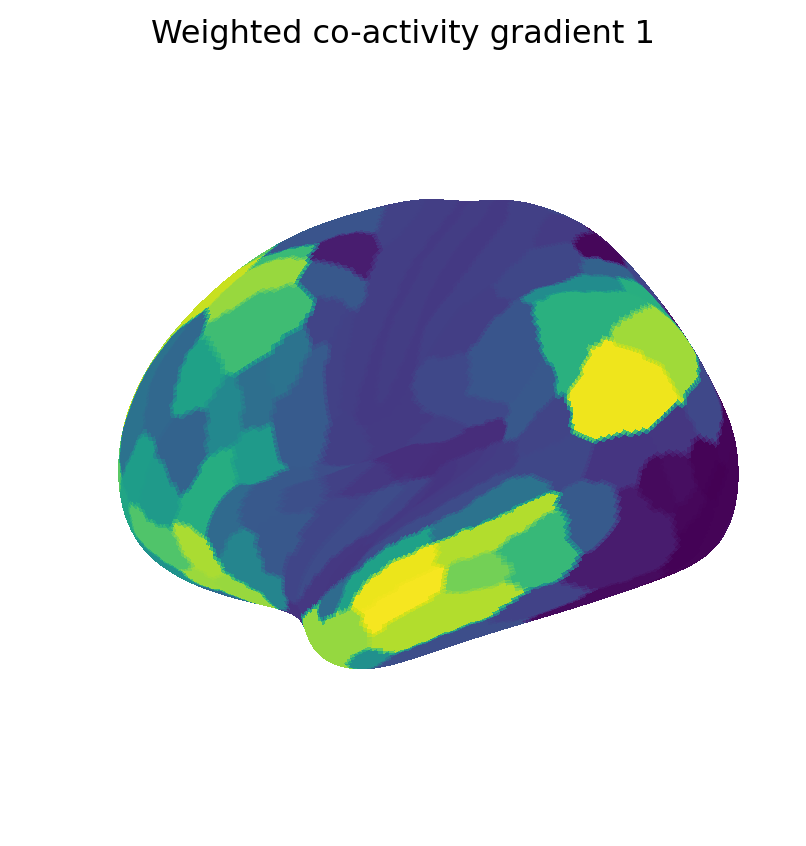
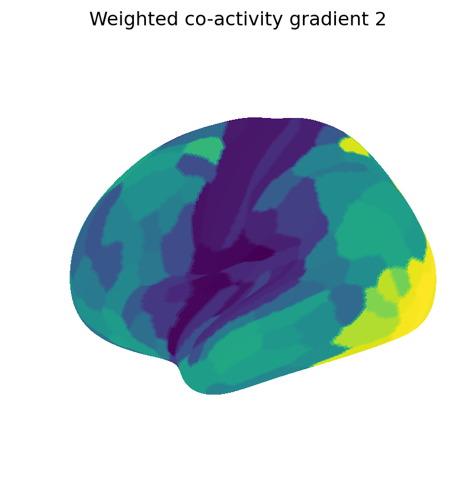
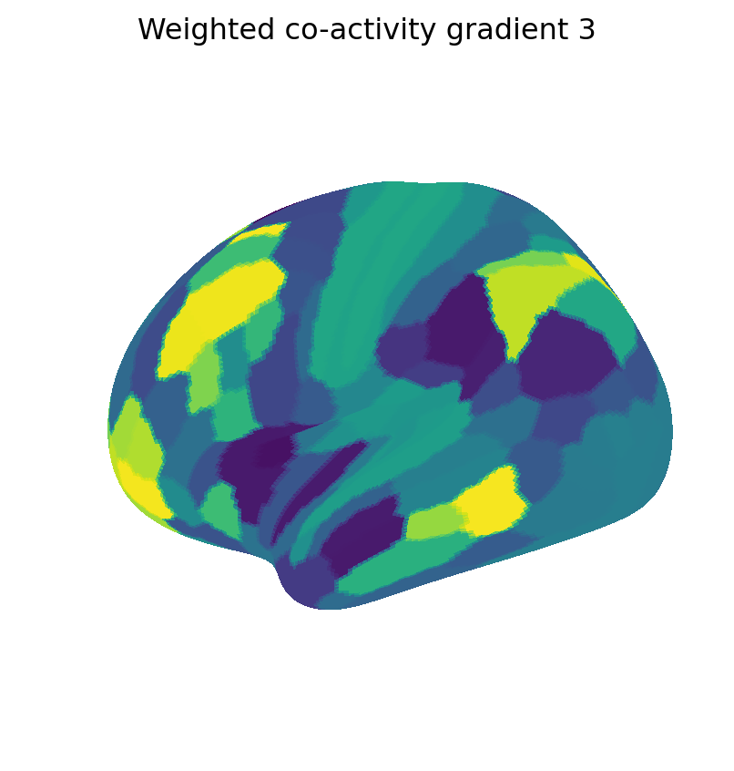
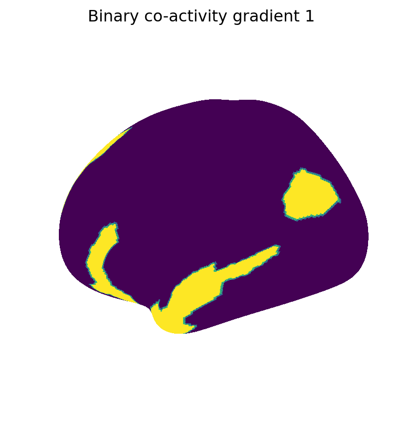
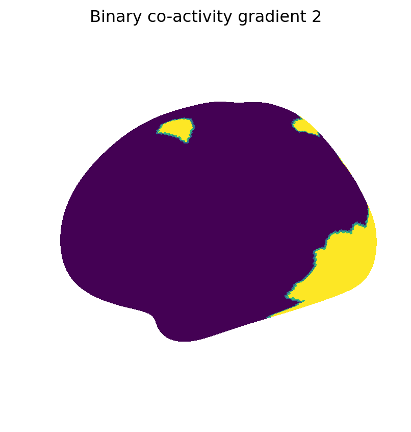
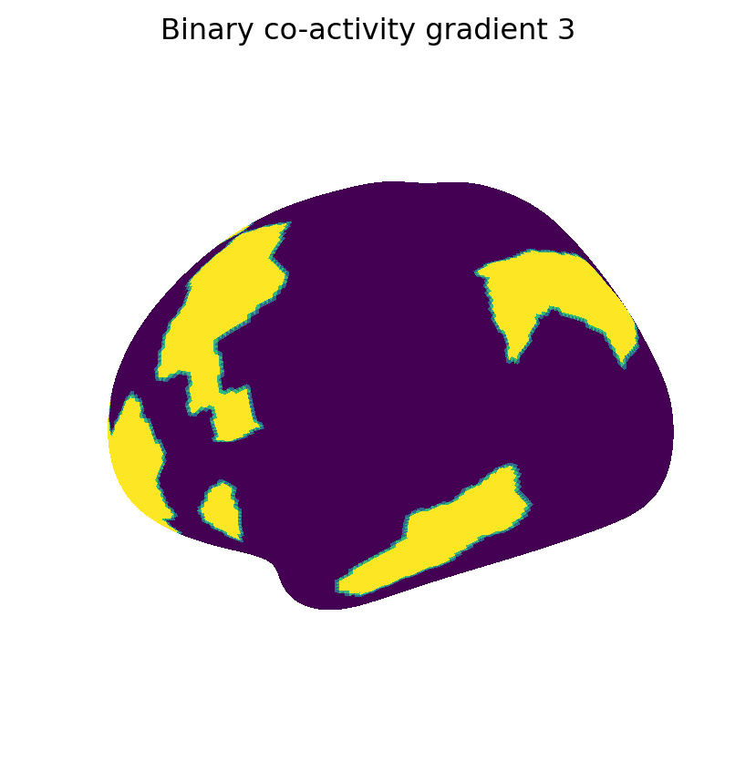
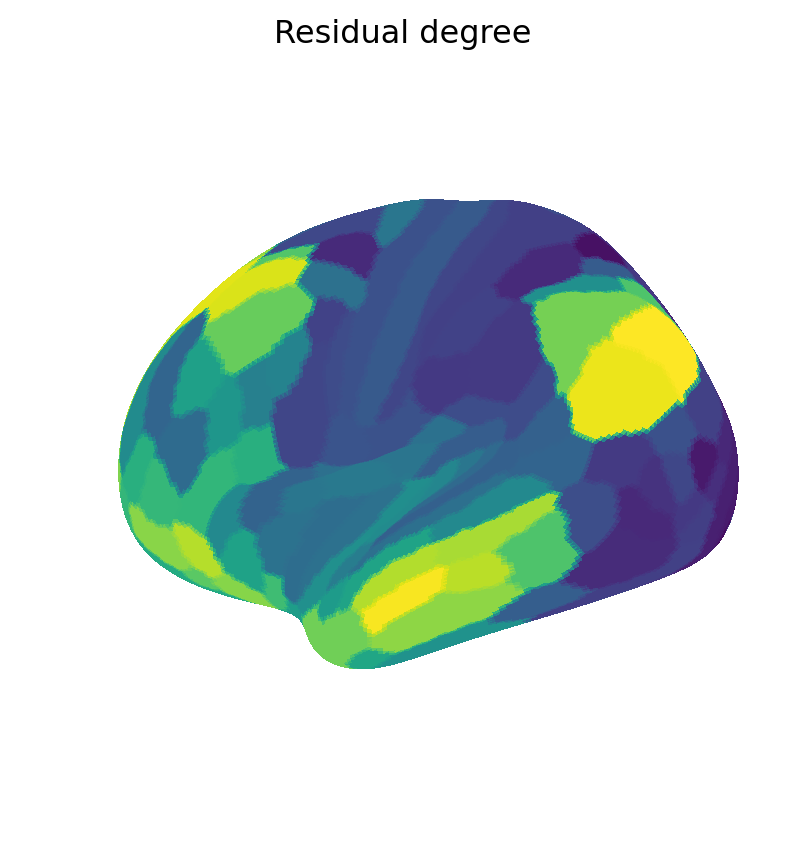

## Import modules
import abct
import numpy as np
from utils import W, C, fig_scatter, fig_surfCo-activity Gradients
Set up and load data
Get co-activity gradients
np.random.seed(1)
# Define co-activity gradient parameters (see kneighbor)
k = 5
kwargs = {"type":"common", "kappa":0.1, "similarity":"network"}
# Weighted gradients
V_wei = abct.kneicomp(C, k, "weighted", **kwargs)
V_wei = V_wei[:, [0, 1, 3]]
# Binary gradients
V_bin = abct.kneicomp(C, k, "binary", **kwargs)
V_bin = V_bin[:, [1, 2, 3]]
# Flip sign of weighted gradients to match binary gradients
V_wei *= np.sign(np.sum(V_wei * V_bin, 0))
# Residual degree
D_wei = abct.degree(C, "residual")Show maps of weighted and binary co-activity components
comps = {"Weighted co-activity gradient": (V_wei, "viridis"),
"Binary co-activity gradient": (V_bin, "viridis")}
for i, (name, Vals_cmap) in enumerate(comps.items()):
Vals, cmap = Vals_cmap
for j in range(Vals.shape[1]):
fig_surf(Vals[:, j], f"{name} {j+1}", cmap)





Show map and scatter of residual degree
# Map of residual degree
fig_surf(D_wei, "Residual degree", "viridis")
# Scatter of residual degree and weighted co-activity gradient
r = np.corrcoef(D_wei, V_wei[:, 0])[0, 1]
fig = fig_scatter(D_wei, V_wei[:, 0], "Residual degree", "Weighted co-activity gradient", f"r = {r:.3f}").show()